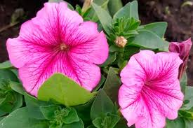

Лійкоподібні квіти, які також називають кампануловими, представляють собою вид рослин, які вразять вас своєю незвичайною формою та яскравими кольорами. Ці квіти дійсно нагадують лійки або дзвіночки, і вони можуть бути знайдені у природі, а також в садах та парках як у дикому, так і в культивованому вигляді. Давайте зануримось у світ лійкоподібних квітів і дізнаємось більше про їхню природну красу та важливу роль в садівництві.
Лійкоподібні квіти прикрашають наші сади та луки своєю унікальною грацією і різноманітністю. Вони варіюються від дрібних, ніжних кампанулок до великих, вражаючих квітів лілій. Відмінність цих рослин у їхній формі: це великі дзвіночки, які висять на тонких стеблах або вороніння з квітками, подібними до труби. Ця різноманітність робить лійкоподібні квіти популярними серед садівників і флористів, які використовують їх у букетах та композиціях.
 Багато видів лійкоподібних квітів також відомі своєю цінністю для екології. Вони приваблюють бджіл та інших комах, які запилюють їх квіти, сприяючи розповсюдженню рослин. Це робить їх важливими для збереження природного біорізноманіття. Крім того, деякі види мають цінні лікарські властивості і використовуються у традиційній медицині для лікування різних захворювань. Лійкоподібні квіти - це не просто прикраса для наших садів, але і важливий гравець у підтримці екосистеми та забезпеченні нам чудового видовища кожного літа.
Багато видів лійкоподібних квітів також відомі своєю цінністю для екології. Вони приваблюють бджіл та інших комах, які запилюють їх квіти, сприяючи розповсюдженню рослин. Це робить їх важливими для збереження природного біорізноманіття. Крім того, деякі види мають цінні лікарські властивості і використовуються у традиційній медицині для лікування різних захворювань. Лійкоподібні квіти - це не просто прикраса для наших садів, але і важливий гравець у підтримці екосистеми та забезпеченні нам чудового видовища кожного літа.
Вгору